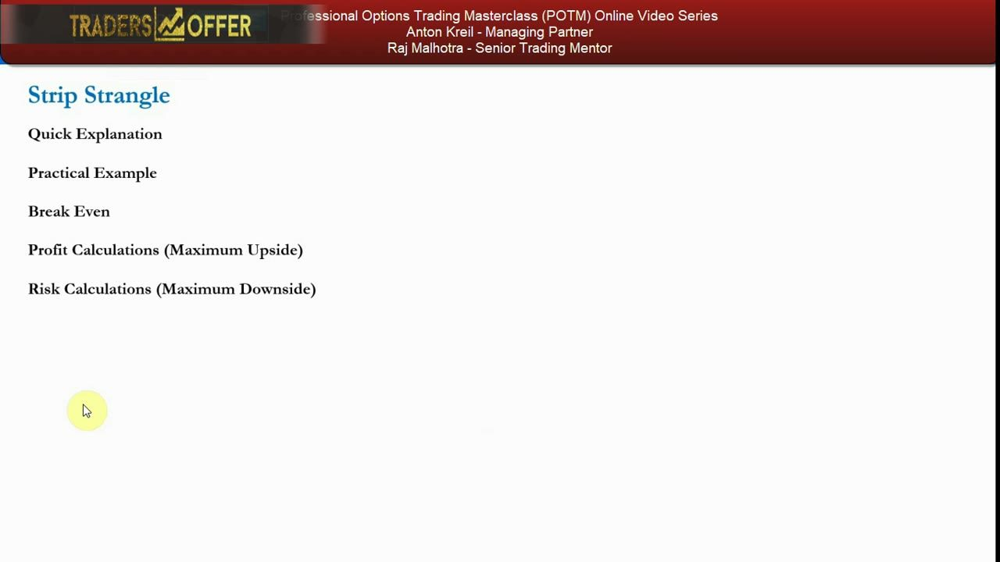
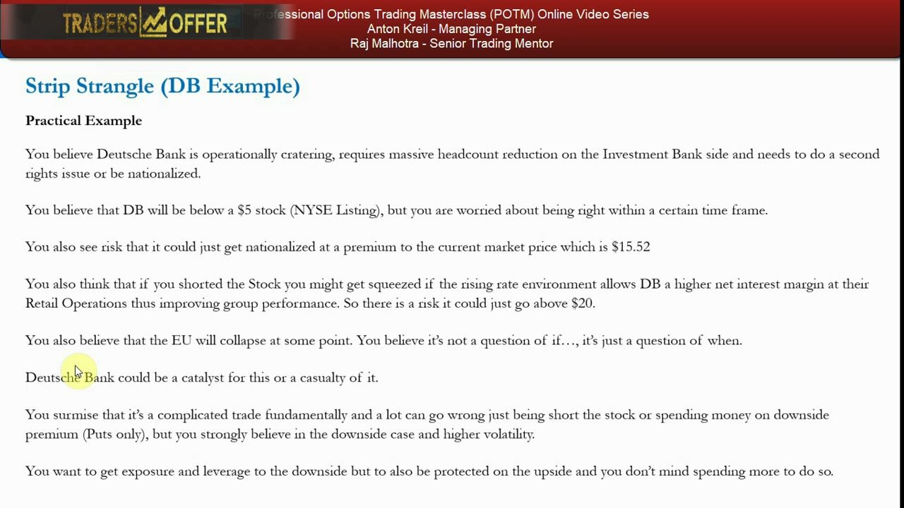
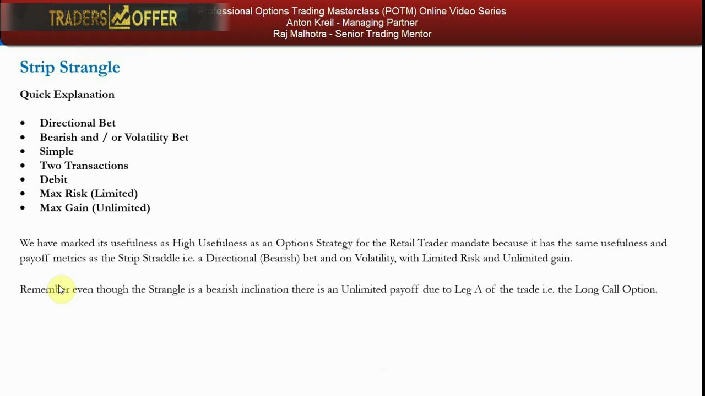
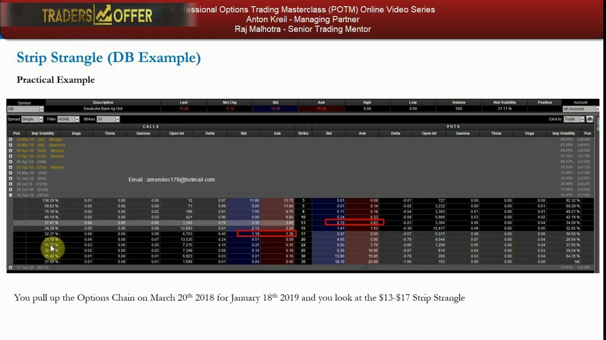
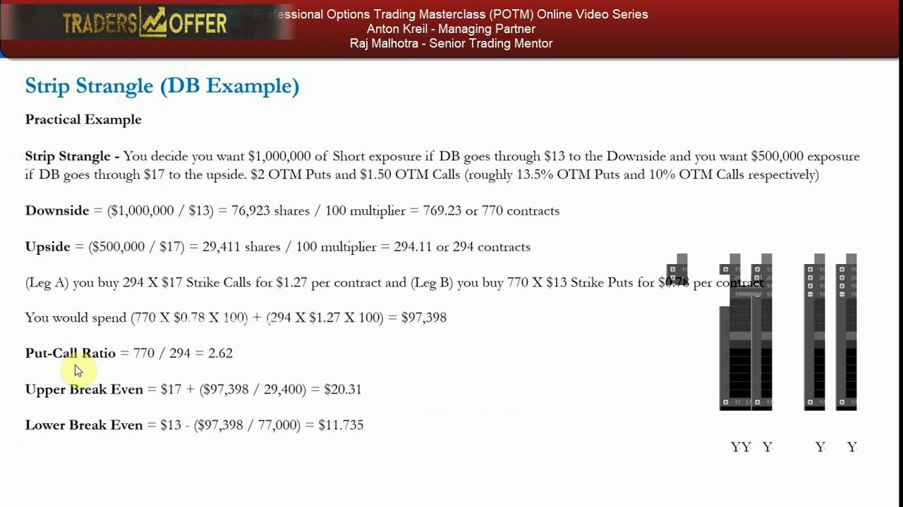
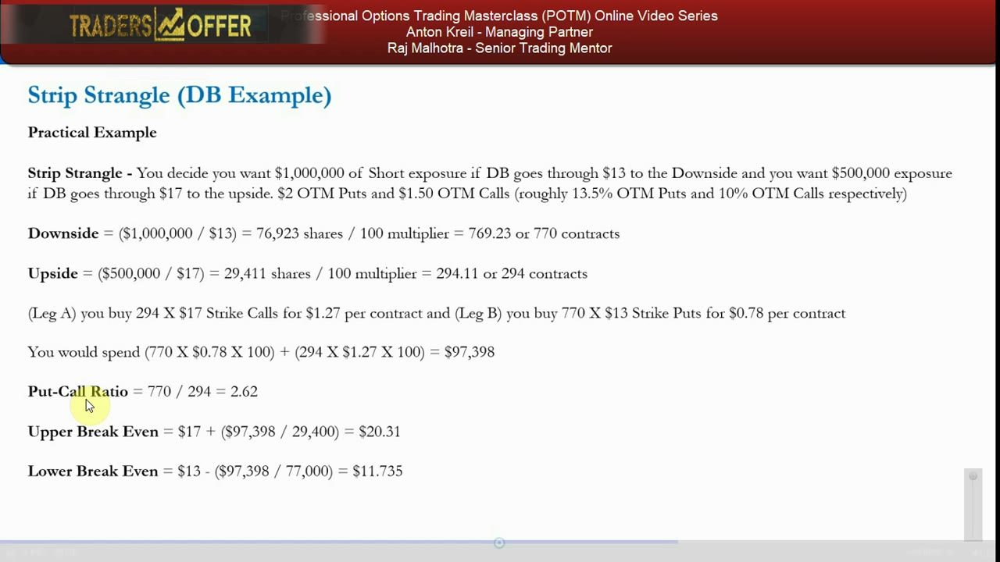
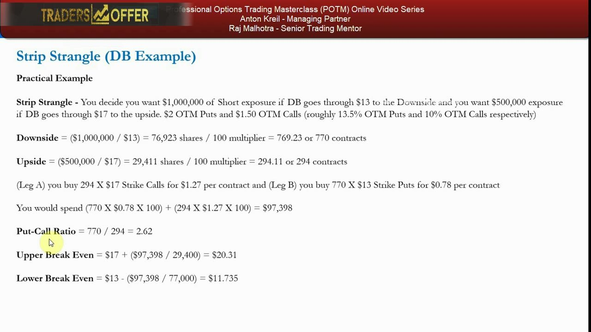
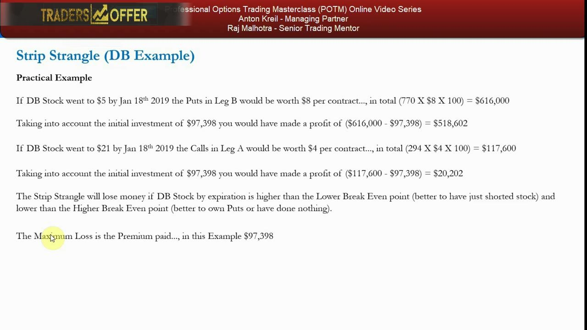
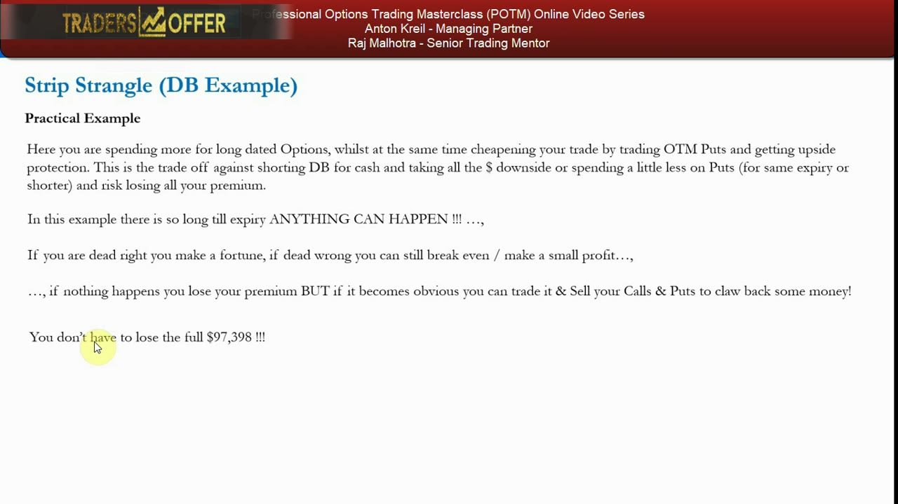
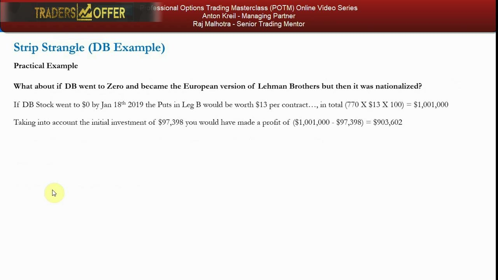

Strip Strangle — The Bearish OTM Volatility Bet
Buy two OTM puts against one OTM call for the same expiry — a bearish-skewed, cheaper-but-needs-a-bigger-move long-vol bet, and the final strategy of the POTM course.
The strip strangle is the out-of-the-money cousin of the strip straddle: two OTM puts plus one OTM call, put-heavy, betting hard on the downside while staying protected to the upside. It is the bearish mirror of the strap strangle and the last directional volatility bet in the masterclass.
The gist
- A strip strangle = BUY 2× OTM puts (lower strike) + BUY 1× OTM call (higher strike), SAME expiry — the OTM version of the strip straddle and the bearish mirror of the strap strangle.
- Default 2:1 put-heavy, but any put-heavy ratio works (3:1, 4:1). The two decisions are which strikes and which put-to-call ratio — neither has one correct answer; both flow from the stock's fundamentals, circumstances and catalysts.
- Bearish-skewed long-vol bet: net DEBIT, cheaper than a strip straddle because the legs are OTM, but it needs a BIGGER move to pay because it requires higher volatility.
- Flat-bottom payoff: max loss = total premium paid, incurred anywhere in the ZONE between the two strikes; large downside profit (2 puts, all the way to $0) and unlimited upside (1 call).
- Breakevens spread the ENTIRE net debit over one leg's shares: upper = call strike + total_debit/(call_contracts×100); lower = put strike − total_debit/(put_contracts×100).
- Anton rates its usefulness HIGH — same usefulness and payoff metrics as the strip straddle (directional-bearish + volatility, limited risk, unlimited gain).
- DB worked example: spot $15.52 (chain Last $15.40), 18 Jan 2019 expiry, a $13–$17 strip strangle — 770× $13 puts @ $0.78 + 294× $17 calls @ $1.27, total net debit $97,398 (= max loss in the $13–$17 zone); lower BE $11.735, upper BE $20.31.
- DB outcomes: to $5 → +$518,602; to $21 → +$20,202; to $0 (nationalized) → +$903,602 — a bank-stress / going-to-zero thesis, and the FINAL strategy of the POTM course.
The last strategy: what a strip strangle is
- The final directional volatility bet — and the final video of the Professional Options Trading Masterclass.
- Strip strangle = buy one OTM call + buy two OTM puts for the same expiration (or any put-heavy ratio — 3:1, 4:1).
- Same trade structure and payoff as the strip straddle, except the legs are out-of-the-money rather than at-the-money.
- Framed another way: an extension of the long strangle, but with a higher ratio of OTM puts vs OTM calls bought.
The strip strangle is the OTM sibling of the strip straddle and the bearish mirror of the strap strangle. Anton skips the theory-heavy 'how and when' walkthrough here and dives straight into a practical Deutsche Bank example to bring the numbers up to a professional/institutional level.

The two decisions: strikes and ratio
- The two decisions are which strikes to use and the ratio of puts to calls — neither has one defined correct answer.
- Both come down to the underlying's fundamentals, circumstances, your expectations, and upcoming catalysts.
- Choosing strip straddle vs strip strangle depends on the risk/reward and the underlying fundamental catalysts you expect.
- Going further OTM cheapens the trade (lower option prices for a given expiry) but lowers the odds of getting paid because it requires higher volatility.
Because we are now dealing with OTM options, your read on the fundamentals and catalysts has to be sharper — the cheaper entry is bought by demanding a bigger move.

Quick explanation & HIGH usefulness
- Directional bet; bearish and/or volatility bet; simple; two transactions; debit; max risk limited; max gain unlimited.
- A fairly sizable debit relative to other long-options strategies — you pay for the downside bet AND buy upside protection with a call.
- Maximum risk is limited to the premium paid; maximum gain is unlimited due to the long call side (leg A).
- Marked HIGH usefulness for the retail-trader mandate — same usefulness and payoff metrics as the strip straddle.
Even though the strangle carries a bearish inclination, leg A (the long call) gives it an unlimited upside payoff. Directional-bearish + long volatility, limited risk, unlimited gain — the metrics Anton likes.

The Deutsche Bank thesis
- March 20th 2018, DB ADR (NYSE) at $15.52; the options chain shows Last $15.40 — down heavily over five years, ranging ~$14.50–$20 since end-2016.
- Thesis: DB is operationally cratering, needs massive IB-side headcount cuts and a second rights issue or nationalization; you believe it goes below a $5 stock.
- But you are unsure of timing and of the path: it could get nationalized at a premium (even above $20), or a rising-rate environment could lift retail net interest margin and squeeze a short.
- You also carry an EU-collapse macro view — DB as either catalyst or casualty; a complicated trade where being outright short or puts-only leaves too much that can go wrong.
You strongly believe in the downside and higher volatility but want leverage to the downside WITH upside protection, and you don't mind paying more for it — the exact setup a strip strangle serves. Pulling up the Jan 18th 2019 expiry, you look at the $13–$17 strip strangle.

Sizing by dollar exposure
- You want $1,000,000 of short exposure if DB breaks $13 down, and $500,000 if it breaks $17 up ($2 OTM puts ≈ 13.5%, $1.50 OTM calls ≈ 10%).
- Downside: $1,000,000 / $13 = 76,923 shares / 100 = 769.23 → 770 put contracts.
- Upside: $500,000 / $17 = 29,411 shares / 100 = 294.11 → 294 call contracts.
- Put-call ratio = 770 / 294 = 2.62 — NOT a clean 2:1 or 3:1, because it is set by the dollar exposure and the best available strikes, not by a fixed contract ratio.
Sizing is driven by dollar exposure, so the contract ratio (2.62) differs from the exposure ratio (2:1). DB's $1 strike increments and low, volatile price mean you can rarely land the exact-distance OTM strikes you want — you get as close as the chain allows.

The debit and the two legs
- Leg A: buy 294 × $17-strike calls @ $1.27 per contract.
- Leg B: buy 770 × $13-strike puts @ $0.78 per contract; same expiry, 18 Jan 2019.
- Total premium = (770 × $0.78 × 100) + (294 × $1.27 × 100) = $97,398.
- That $97,398 is the net debit — and the maximum loss, incurred anywhere DB finishes inside the $13–$17 zone by expiry.
The flat-bottomed payoff means the full premium is lost across the whole zone between the strikes, not just at a single point — the price of buying both a leveraged downside bet and an upside hedge in one structure.

Breakevens — spreading the whole debit
- Each breakeven spreads the ENTIRE net debit over the shares of the single leg being valued.
- Upper BE = $17 + ($97,398 / 29,400) = $20.31 (29,400 = 294 call contracts × 100).
- Lower BE = $13 − ($97,398 / 77,000) = $11.735 (77,000 = 770 put contracts × 100).
- Below $11.735 or above $20.31 the trade makes money; between $13 and $20.31 it loses (max loss inside the $13–$17 zone).
Because the debit is charged against whichever leg you are valuing, the upper breakeven sits well above the call strike and the lower breakeven below the put strike — the move has to clear those wider posts to pay.

Outcomes: $5 and $21
- DB → $5 by 18 Jan 2019: puts worth $8 each → 770 × $8 × 100 = $616,000; minus $97,398 = +$518,602 profit.
- DB → $21 by 18 Jan 2019: calls worth $4 each → 294 × $4 × 100 = $117,600; minus $97,398 = +$20,202 profit.
- Volatility to either side can pay — the $5 case makes ~5× the bet, the $21 case just clears breakeven.
- Maximum loss stays the $97,398 premium, incurred if DB finishes inside the zone by expiry.
The payoff is steeper on the downside because two puts run all the way toward zero, while one call carries the unlimited upside. If DB merely drifts inside the breakevens you'd have been better off shorting stock, owning fewer puts, or doing nothing — opportunity cost and marginal benefit govern the read.

Trade-offs & flexibility
- You pay more for long-dated options while cheapening the trade via OTM puts and buying upside protection.
- The trade-off vs shorting DB for cash (all the downside — and unlimited upside loss if wrong) or vs cheaper puts-only (risk losing all premium).
- ~10 months to expiry — anything can happen: dead right = a fortune; dead wrong = break even or a small profit; nothing happens = lose premium.
- You can trade it: sell the calls and puts to claw money back, or stop-loss the strategy (e.g. cap loss at ~$47,000 by cutting for ~$50,000 of residual value) — you don't have to lose the full $97,398.
The long dated expiry and the flexibility to exit early are what make the sizable debit palatable: the structure is defined-risk, and you can reassess the odds as the fundamentals evolve rather than riding it blindly to expiry.

The dream scenario: DB to zero
- If DB became the European Lehman Brothers and was then nationalized, it goes to $0 by 18 Jan 2019 — the ultimate outcome for this thesis.
- DB → $0: puts worth $13 each → 770 × $13 × 100 = $1,001,000; minus $97,398 = +$903,602 profit — roughly a nine-for-one payoff.
- Systemic deposit/loan risk to Europe means the German government would likely have to guarantee DB — a basis-changing event and an effective crash hedge for a portfolio.
- Even in the dream case, stay dynamic: if DB falls to $5–$7 the bust odds shift, so reassess the odds and payoff and consider taking profit rather than holding for zero.
This closes both the strip strangle and the POTM series. The $903,602 zero-case shows why put-heavy OTM structures suit a bank-stress / going-to-zero thesis — enormous convex downside payoff for a defined premium, with the discipline to keep re-pricing the odds as the story plays out.

Glossary
- Strip strangleA put-heavy long-volatility structure: buy 2× OTM puts (lower strike) + 1× OTM call (higher strike) for the same expiry, in a 2:1 default (or any put-heavy) ratio. The OTM version of the strip straddle and the bearish mirror of the strap strangle.
- OTM (out-of-the-money)An option whose strike is away from the current spot (put strike below spot, call strike above). Cheaper than ATM options for a given expiry, but needs a bigger move — higher volatility — to pay off.
- Net debitThe total premium paid to open the trade. For a long strip strangle it is the whole cost and equals the maximum loss, incurred anywhere the stock finishes in the zone between the two strikes.
- Flat-bottom payoffBecause both legs are OTM, the payoff is flat (at max loss = total premium) across the entire zone between the put and call strikes, rather than losing most only at a single point.
- Upper breakevenCall strike + total_debit / (call_contracts × 100). In the DB example: $17 + ($97,398 / 29,400) = $20.31.
- Lower breakevenPut strike − total_debit / (put_contracts × 100). In the DB example: $13 − ($97,398 / 77,000) = $11.735.
- Put-call (contract) ratioContracts on the put side divided by contracts on the call side. In the DB example 770 / 294 = 2.62 — different from the 2:1 dollar-exposure ratio because sizing is driven by dollar exposure and available strikes.
- Dollar-exposure sizingSetting contract counts from a target notional (shares = $exposure / strike, contracts = shares / 100) rather than from a fixed contract ratio, so the contract ratio need not equal the exposure ratio.
- ADRAmerican Depository Receipt — a US-listed proxy for a foreign share. Deutsche Bank has a primary European listing and a secondary NYSE listing traded as an ADR.
- Rights issueA capital raise selling new shares to existing holders. A troubled company that raises too little often returns to the market for more — a catalyst underpinning the DB downside thesis.